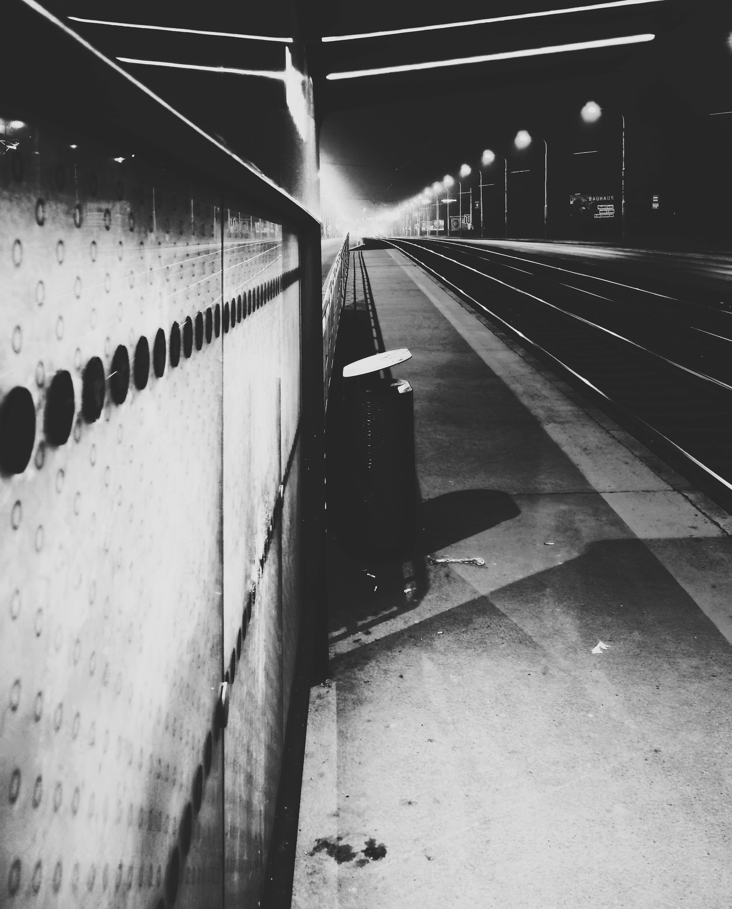

Každý člověk má ve svém životě něco, co by rád změnil. Něco, co by rád přetavil v něco lepšího, jiného a plnohodnotnějšího. Z vlastní zkušenosti mohu říct, že je úplně jedno, kdy k tomuto zjištění a přesvědčení dojdete. Vlastně to ani nemusí být přesvědčení, stačí mít jen chuť a zvědavost. Jaké to je něco v životě změnit? Jaké to je vyjet z těch zaběhnutých kolejí, ve kterých vlastně žijeme už hodně dlouho a které máme za takové pevné mantinely v životě?
Zkusil jsem to. Právě na začátku své „proměny“ jsem si přesně takovou otázku položil. Jaké to vlastně je? Zkoušel jsem něco v životě změnit, trochu si s tím hrát. Očuchávat to. Zjišťovat, jaké to je nekoukat na televizi. Zkusit si jít zacvičit. Zkusit ujít denně deset tisíc kroků. Docela mě to vzalo a chytlo mě to „u srdíčka“. Ne ty konkrétní kroky, ale celkově ta možnost změny. To, že jako člověk jsem si vyzkoušel, že ta změna možná je a že na ni mohu dosáhnout i já.
Můj mozek se pomalu naučil vnímat jen tu jedinou věc, a tou bylo to, že změna v mém životě existuje. Jen tu banální a primitivní myšlenku – můžeš ve svém životě něco změnit – jen tuhle myšlenku si musel mozek očuchat a přijmout. Bez toho by se žádná změna u mě nikdy neuskutečnila.
Začal jsem do svého života postupně změny zapracovávat. Začal jsem například tím, že jsem značně omezil sociální sítě. A víte, co se v ten moment stalo? Nic. Vůbec nic. Chodil jsem na ně dál, dál jsem scrolloval nesmyslná videa a četl hloupé příspěvky. Jen po kratší dobu. Stejně tak to bylo se cvičením. První dny jsem za to vzal a chtěl všechno hned. Vysnil jsem si, že budu cvičit každý den, že ujdu denně deset kilometrů, že začnu cvičit dvoufázově a další a další mety, které ale v celkovém kontextu byly blbosti. Nedal jsem to. Neudržel jsem tempo. Zapomněl jsem, že jsem člověk, ne robot.
Stejné to bylo i s cigaretami. S těmi normálními jsem přestal už dávno, ale spadnul jsem do elektronických cigaret. Do vapingu. Tak jsem si k tomu cvičení a k té změně ještě zakázal i to kouření. Všechny zařízení jsem vzal a schoval. Abych je neměl na očích, šly do sklepa. Vydržel jsem to čtyřiicet dnů. Co se stalo potom? Asi tušíte – jednoho dne moje kroky směřovaly do sklepa. Byl jsem zpátky. Impuls bylo jen pivko s kámošem v zahradní restauraci. On kouřil, já si potáhnul a už jsem byl tam, kde jsem přestal. Ještě hůře – začal jsem kouřit více. Po určité době se ozvalo svědomí. „Co to děláš?“ ptalo se. „Vždyť jsi říkal, že už nebudeš, a koukej se na sebe!“
Vzal jsem všechna zařízení na kouření a nemilosrdně je vyhodil. Ano, šly do koše. Do kontejneru, abych na ně už nemohl a neměl je k dispozici. Fajn. Jenže přišla záludnost číslo dvě. Tou bylo to, že jsem si jedno zařízení koupil. Opět jsem to nedal. Řekl jsem si: občas si párkrát potáhneš za den, to přece dáš. Skončilo to tím, že jsem si koupil karton náplní a vydržel mi týden. Tisíc korun za týden. Začal jsem opět přemýšlet, jak to vzít z jiného konce a kde jsem minule udělal chybu.
Opět jsem vyhodil tu koupenou cigaretu a řekl si: „už dost“. Vydržel jsi to čtyřicet dní, vydržíš to i dál. Akorát jsem nedomyslel jednu věc – jednorázové cigarety. Mozek a lidská vůle jsou v tomhle směru kouzelné. Dokáží vymyslet vždy něco, jak se dostat k tomu, co chceme. Moje hlava na to prostě nebyla připravená. Neměl jsem připravené scénáře, co dělat, když přijde krizová situace.
Využil jsem tedy příležitosti k tomu to změnit v době, kdy jsem odjel domů za rodiči. Před nástupem do vlaku na hlavním nádraží jsem vyhodil poslední jednorázovku a prostě si řekl: „Jdu do toho“. Doma jsem nikdy nekouřil, takže právě v té cestě k rodičům jsem našel ten odrazový můstek. Změnil jsem prostředí, rituály a měl jsem volno. To mi pomohlo k tomu, že jsem si na cigaretu skoro ani nevzpomněl. Nebyl tam nikdo, kdo by kouřil. V neděli jsem odešel od rodičů a nenapadlo mě jít do trafiky.
Teďka, když píšu tento článek, je to už více než 72 hodin od posledního potáhnutí. Mám za sebou už všechny situace, ve kterých jsem byl zvyklý kouřit. Nekoupil jsem si cigaretu, nenapadlo mě žebrat od kolegy. Zatím jsem to zvládnul. Pokud se ptáte, jestli jsem měl chuť, tak ano, samozřejmě. Zvládl jsem ji. Byl to záchvěv starých vazeb, které můj mozek pořád má. Ale přepisují se.
Zvládl jsem nekouřit při čekání na zastávce tramvaje. Tam jsem vždycky kouřil. Teď ne. První impuls v mozku byl jasný: čekáš – čas na potáhnutí. Neudělal jsem to a přepsal kousek z toho návyku v mozku. Mozek zažil situaci, kdy byl zvyklý, že se kouří, a najednou nic. A přežil jsem to. Tím jsem přepsal kousek vazby.

Krůček po krůčku jdu k cíli. Vědomě, protože vím, co to způsobuje a proč. Vím, jak reagovat na to, když přijde chuť. Dýchat, zaměstnat se, napít se vody. Odvést myšlenku. A hlavně – uvědomit si, že mozek vyslal ten signál. To je pro mě klíč k úspěchu, kterého se chci a budu držet. Vnímat své touhy a to, co mi mozek vysílá, a vědomě je rozlišovat. To je cesta mimo trasu.